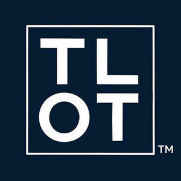

Trade Mark Journal No.2025/031 1 August 2025
UK00004236540 20 July 2025 (9,16,25,28,35,36,39,41)

- Class 9
- Digital recording media; Digital storage media; Digital media streaming devices; Digital data recording media; Blank digital recording media; Blank digital storage media; Covers for digital media players; Cases for digital media players; Computer software for the display of digital media; Electronic storage media; Media software; Media content; Digital signage; Digital cameras; Electronic magnetic recording media; Digital televisions; Media streaming software; Optical recording media; DMB (Digital Multimedia Broadcasting) televisions; Electronic data storage media; Media and publishing software; Optical data media; Data media (Optical -); Digital video players; Digital music downloadable from the Internet; Blank analogue recording media; Blank analogue storage media; Digital video cameras; Digital recordings; Digital electronic controllers; Digital video recorders; Digital video servers; Optical data recording media; Digital audio players; Digital music players; Digital video discs; Digital audio servers; Electronic publications recorded on computer media; Digital telephone platforms and software; Digital phones; Computer application software for streaming audio-visual media content via the internet; Electronic digital signboards; Analogue to digital converters; Digital to analogue converters; Digital boards; Recorded media; Digital signage monitors; Software for online messaging; Platform software; Software for embedding online advertising on websites; Software for designing online advertising on websites.
- Class 16
- Event programs; Events programmes; Souvenir event programs; Printed awards; Event albums; Printed award certificates; Stationery; Manifolds [stationery]; Stapling guns (Electric -) for stationery use; Pads [stationery]; Paper stationery.
- Class 25
- T-shirts; Tee-shirts; Printed t-shirts.
- Class 28
- Raffle tickets.
- Class 35
- Sales promotions at point of purchase or sale, for others; Promotion of special events; Arranging promotion of charitable fundraising events; Advertising, including promotion of products and services of third parties through sponsoring arrangements and licence agreements relating to international sports' events; Event marketing; Marketing services relating to esports events; Digital marketing; Advertising via electronic media and specifically the internet; Digital advertising services; Promotional marketing services using audiovisual media; Sales promotion using audiovisual media; Provision of advertising space on electronic media; Online retail services for downloadable digital music; Rental of digital billboards; Organisation of promotions using audiovisual media; Presentation of companies on the Internet and other media; Organisation of promotions using audio-visual media; Providing marketing consulting in the field of social media; Advertising the goods and services of online vendors via a searchable online guide; Online marketing; Online advertising; Providing a searchable online advertising guide featuring the goods and services of other on-line vendors on the internet; Providing a searchable online advertising guide featuring the goods and services of online vendors; Online advertising services; Online advertisements; Online business networking services; Online advertising via a computer communications network; Trade marketing [other than selling]; Arranging of contracts for others for the buying and selling of goods; Arranging business introductions relating to the buying and selling of products; Arranging of buying and selling contracts for third parties; Carrying out auction sales; Arranging of auction sales; Auction sales (Arranging of -); Inventorying merchandise; Procuring of contracts for the purchase and sale of goods; Telephone marketing services [not selling]; Promoting the sale of fashion goods through promotional articles in magazines; Promoting the sale of goods and services of others through the distribution of printed material and promotional contests; Conducting of auction sales; Arranging the buying of goods for others; Promoting the sale of goods and services of others through promotional events; Merchandising; Arranging and conduction of auction sales; Advertising services to promote the sale of beverages; Product merchandising; Retail of third-party pre-paid cards for the purchase of clothing; Arranging of contracts for the purchase and sale of goods and services, for others; Sales promotion; Arranging of collective buying; Merchandizing; Publicity and sales promotion; Preparation of mailing lists for direct mail advertising services [other than selling]; Mediation of contracts for purchase and sale of products; Negotiation of contracts relating to the purchase and sale of goods; Preparing promotional and merchandising material for others; Promoting the goods and services of others through the distribution of discount cards; Sales promotion for others through trading stamp schemes; Rental of sales stands; Sales promotion for others; Procurement of contracts for the purchase and sale of goods and services for others; Promotion [advertising] of concerts; Marketing the goods and services of others by distributing coupons; Product merchandising for others; Procurement of contracts for the purchase and sale of goods and services; Retail services connected with the sale of clothing and clothing accessories; On-line trading services in which seller posts products to be auctioned and bidding is done via the Internet; Modeling for advertising or sales promotion; Promoting the goods and services of others by distributing coupons; Modelling for advertising or sales promotion; Providing online marketplaces for sellers of goods and or services; Publicity and sales promotion services; Retail services connected with the sale of subscription boxes containing beers; Provision of an online marketplace for buyers and sellers of goods and services; Online retail store services relating to clothing; Display services for merchandise; Advertising services relating to the sale of goods; Arranging advertising and promotional contracts for others; Conducting, arranging and organizing trade shows and trade fairs for commercial and advertising purposes; Media buying services; Promoting the sale of goods and services of others by awarding purchase points for credit card use; Online retail store services in relation to clothing; Online retail services for downloadable virtual clothing; Sales promotion services; Provision of an on-line marketplace for buyers and sellers of goods and services; Distribution of advertising, marketing and promotional material.
- Class 36
- Financial sponsorship of sports events; Financial sponsorship of theater events; Financial sponsorship of dance events; Financial sponsorship of cultural events; Charitable fundraising by means of entertainment events; Financial sponsorship of visual arts events.
- Class 39
- Wrapping of merchandise; Merchandise (Packing of -); Packing of merchandise; Collection of merchandise.
- Class 41
- Organisation of competitions and awards; Organization of sporting events and competitions; Arranging of award ceremonies; Organisation of sporting events and competitions; Organising of sports competitions and events; Providing facilities for sporting events, sports and athletic competitions and awards programmes; Arranging of award ceremonies to recognise achievement; Organisation of entertainment events; Hosting [organising] awards; Timing of sports events; Sports events (Timing of -); Master of ceremony services for parties and special events; Organization of entertainment events; Organising of sports events; Organisation of sporting competitions and sports events; Organization of sporting events; Hosting [organising] awards relating to films; Organising of sporting events, competitions and sporting tournaments; Organising of sporting events; Organising sporting events; Organisation of sporting events; Arranging of award ceremonies to recognise bravery; Organization of sporting events and competitions, involving animals; Publication of calendars of events; Organisation of musical events; Hosting [organising] awards relating to television; Organising community sporting events; Organisation of educational events; Provision of sporting events; Arranging of sporting events; Issuing of educational awards; Hosting [organising] awards relating to videos; Organisation of cultural events; Presentation of live entertainment events; Ticket information services for sporting events; Production of sporting events; Organising of sports competitions and sports events; Organising of sports events and of sports competitions; Organising events for entertainment purposes; Dance events; Organisation of esports events; Organization of cosplay entertainment events; Organisation of entertainment and cultural events; Organisation of conferences, exhibitions and competitions; Organising of recreational events; Entertainment provided during intervals of sporting events; Arranging of educational events; Arranging of cultural events; Organising of football events; Services for the organisation of sports events; Conducting of entertainment events; Ticket procurement services for sporting events; Ticket information services for esports events; Time recording services for sporting events; Organization of dancing events; Certification in relation to educational awards; Organising community cultural events; Organising events for cultural purposes; Production of esports events; Conducting of sports events; Organisation of cycling events; Handicapping for sporting events; Ice-skating events (Organising of -); Production of sporting events for film; Organising gymnastics events; Gymnastics events (Organising of -); Arranging and conducting award ceremonies; Ticket information services for entertainment events; Management of events for sporting clubs; Sporting event organization; Organizing community sporting and cultural events; Entertainment services relating to sporting events; Ticket procurement services for entertainment events; Production of sporting events for television; Disc jockey services for parties and special events; Services for the organisation of football events; Handicapping services for sporting events; Provision and management of sporting events; Organisation of events for cultural, entertainment and sporting purposes; Booking of seats for shows and sports events; Conducting of cultural events; Arranging for ticket reservations for shows and other entertainment events; Organizing cultural and arts events; Organising dancing events; Musical events (Arranging of -); Organization of events for cultural purposes; Organisation of automobile rallies, tours and racing events; Production of sporting events for radio; Entertainment services in the nature of sporting events; Disc jockeys for parties and special events; Conducting of educational events; Entertainment services provided during intervals at sports events; Booking of sports personalities for events (services of a promoter); Production of esports events for television; Organising of sports and sports events; Advisory services relating to the organisation of sporting events; Providing facilities for sports events; Special event planning; Providing will-call ticket services for entertainment, sporting and cultural events; Organising of competitions for entertainment; Competitions (Organising of entertainment -); Provision of information relating to sporting events; Organising of entertainment competitions; Booking of seats for entertainment events; Provision of recreational events; Conducting of live sports events; Arranging and conducting of entertainment events for charitable fundraising purposes; Organisation of entertainment competitions; Ticket reservation for cultural events; Organisation of automobile racing events; Organising of sporting activities and competitions; Organising of sporting activities or competitions; Organization of entertainment competitions; Production of live entertainment events; Organisation of sporting activities and competitions; Organisation of vehicle racing events; Arranging and conducting of sports events for charitable purposes; Conducting of live entertainment events; Video editing services for events; Arranging and conducting of sports events.
Kyle Campbell